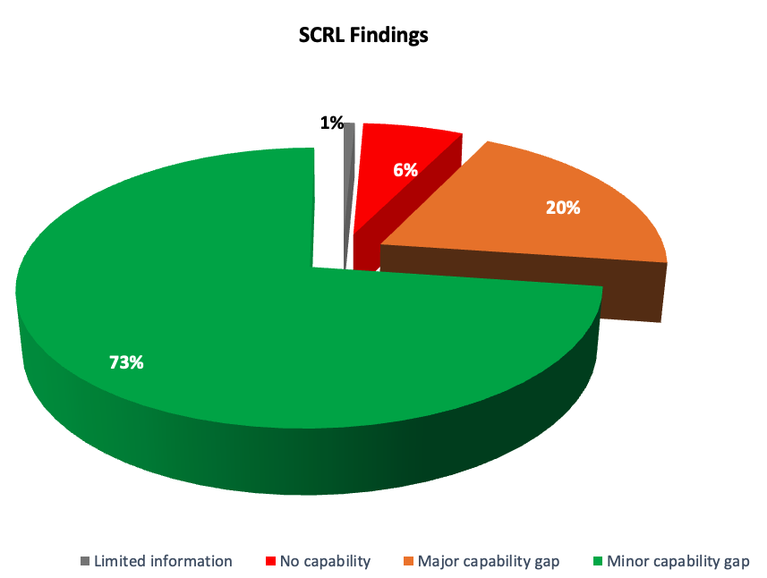
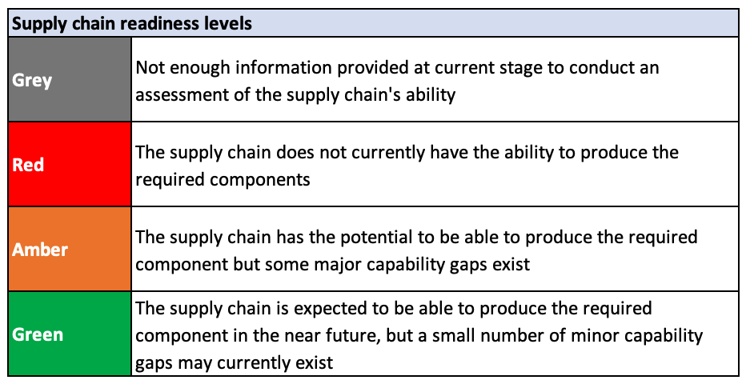
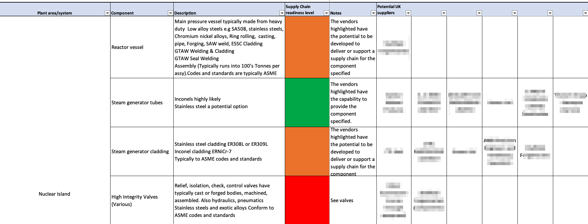

From ground-level capability mapping to structured readiness assessments — NucCol provides the expertise and tools to understand, grow, and strengthen your supply chain.
Our supply chain analysis approach goes beyond assessment. We work directly with organisations developing new reactors, energy infrastructure technology, and other complex programmes — as well as regional authorities — to understand and grow supply chain capacity and capability from the ground up.
By engaging potential suppliers early, we give them a deeper understanding of your technology and specific requirements, bridging the gap between what the market currently offers and what your programme demands.
Whether you are looking to understand existing UK supply chain capability, identify and engage with new suppliers, or maximise UK content across your programme — NucCol provides the expertise and tools to make it happen. Our end-to-end approach ensures that gaps become opportunities, and that your supply chain is positioned for long-term success.

A proven, methodical process designed to evaluate the UK manufacturing supply chain's capability — giving programme teams and suppliers a clear, evidence-based picture and a roadmap to improve it.
NucCol's SCRL assessment uses a combination of F4N company data, an in-house company portal of 3,500+ companies, and knowledge from targeted supplier engagement. Our assessments measure manufacturers' operational and technical capacity — identifying gaps in production, quality, and capability.
Modelled on the concept of Technology Readiness Levels (TRLs) used across advanced engineering, SCRL provides a consistent, repeatable score that reflects a supplier's true readiness — not just their ambition. It covers quality management, operational capability, financial stability, health & safety, workforce capacity, and sector-specific compliance.
Findings are delivered in a structured workbook format accompanied by a detailed report, highlighting strengths, weaknesses, and actionable recommendations to strengthen your supply chain.

The Workbook is a comprehensive, version-controlled document that evolves throughout the project lifecycle. It is structured to ensure consistency and transparency across every stage of the assessment, incorporating project assumptions, customer-supplied component data, and full revision history.
At its core is the SCRL Assessment itself — a detailed list of identified UK suppliers for each commodity, including a brief description of their capabilities, a link to their webpage, and a clear indication of which components they have been assessed as capable of producing.
Supporting notes and citations provide the evidence base behind every assessment decision, while any assumptions made regarding components, manufacturing processes, or required standards are captured against the specific item and explored in greater depth in the accompanying final report.
The more detailed the customer data provided, the more refined and accurate the supply chain review — making early and thorough engagement a key factor in delivering maximum value.

SCRL is equally valuable to manufacturers seeking to grow into major programmes, and to programme teams who need confidence in the supply base they are building.
Understand exactly where you stand against programme requirements, identify the improvements that will open doors to major contracts, and demonstrate your commitment to sector standards.
Build confidence in your supply base with independent, evidence-based assessments. Identify gaps before they become programme risks, and target development investment where it matters most.
Understand the true readiness of the regional or national supply base to support major infrastructure programmes — and target intervention funding for maximum UK content impact.
SCRL assessments work best alongside NucCol's broader supply chain development capability.
Whether you need a rapid capability overview or a full SCRL assessment across a complex programme — talk to NucCol about how we can help.